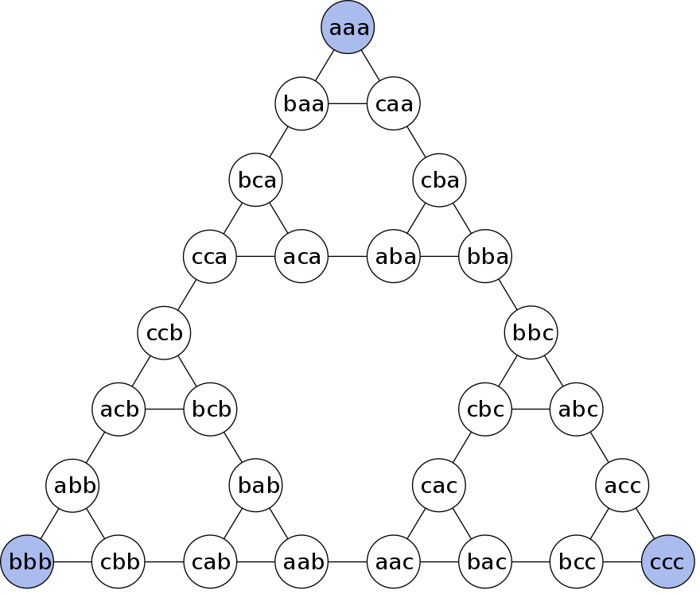
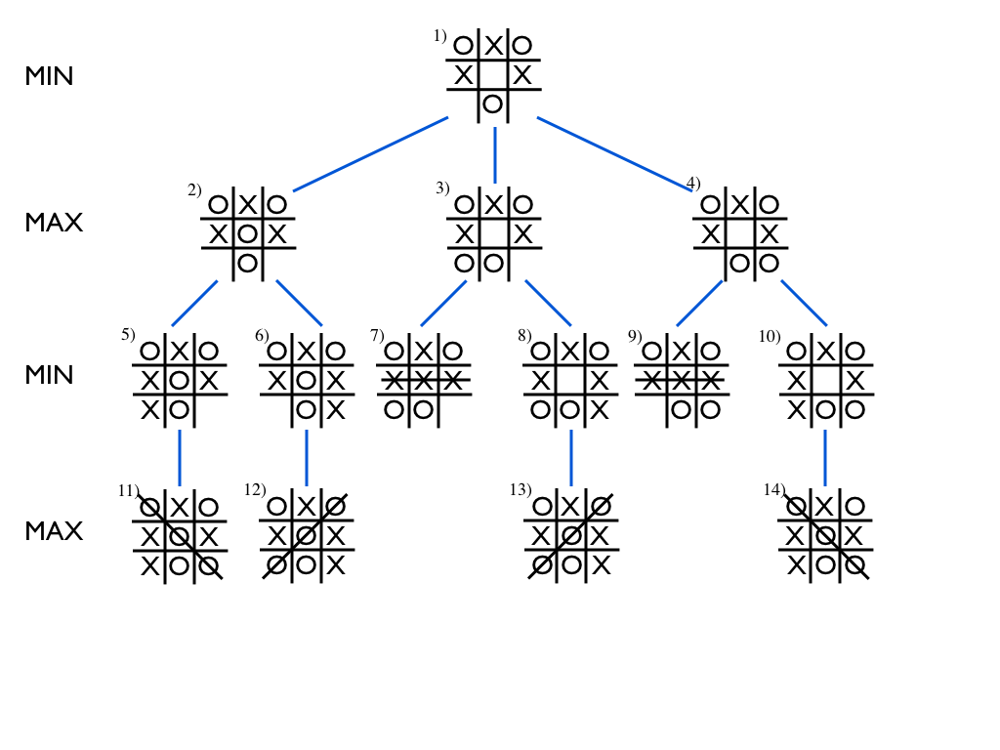
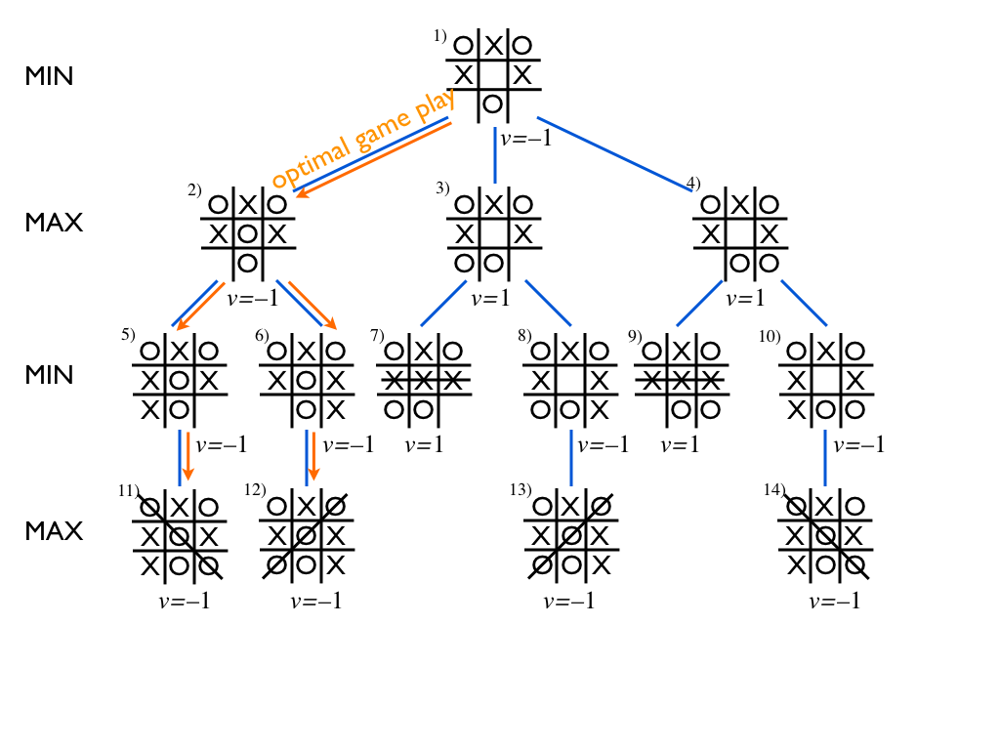
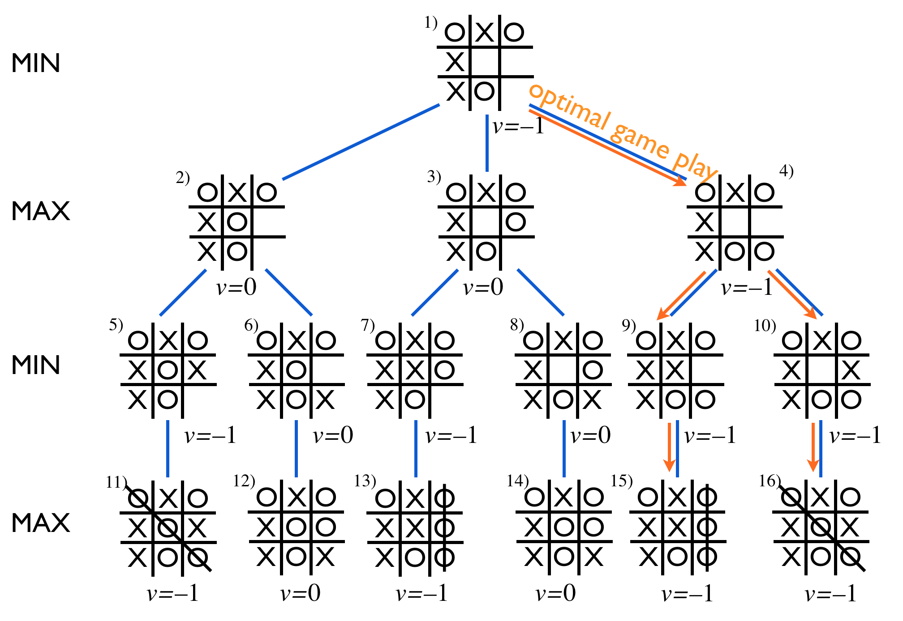
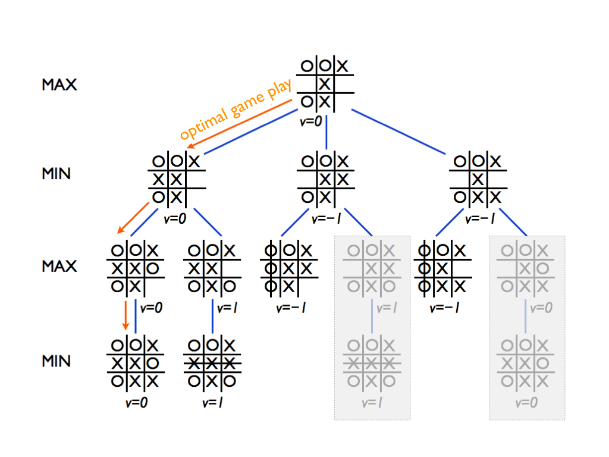
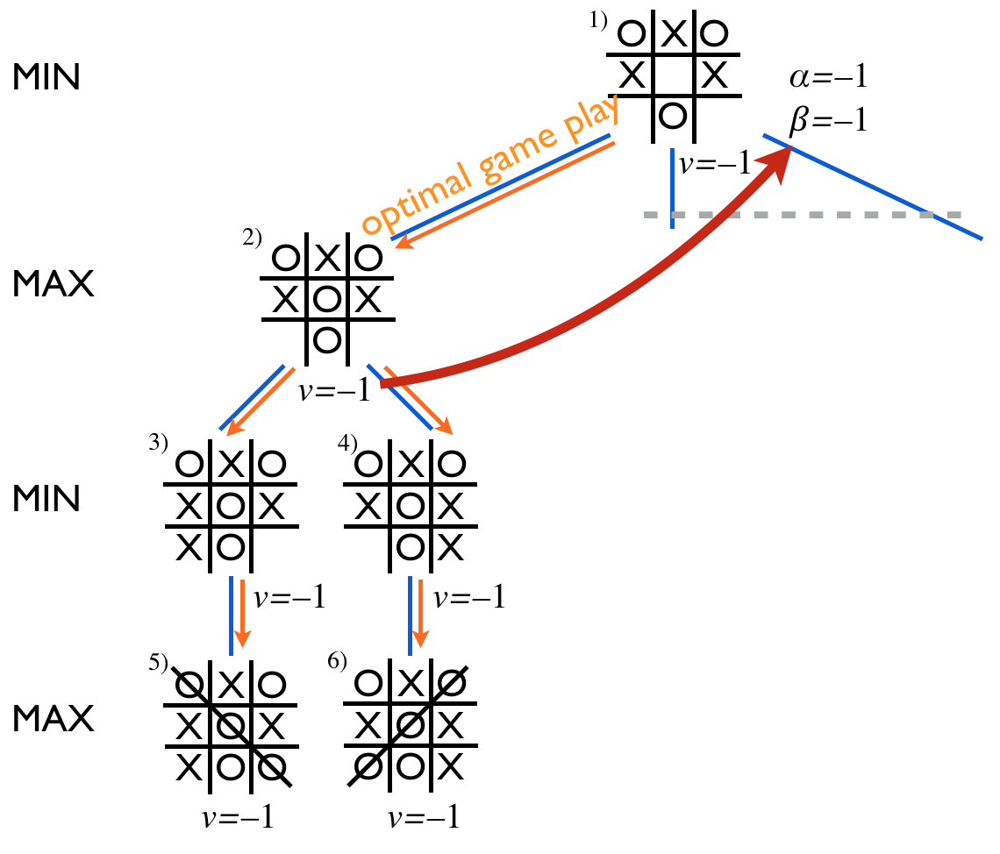

Philosophy, problem solving as search, games
| Theme | Objectives (after the course, you ...) |
|---|---|
| Philosophy and history of AI |
|
| Games and search |
|
What is AI?
In this first part, we will discuss what we mean when we talk about AI. It turns out that there is no exact definition at all, but that the field is rather being redefined at all times.
We will also briefly discuss the philosophical aspects of AI: whether intelligent behavior implies or requires the existence of a ''mind'', and in what extent is consciousness replicable as a computational process. However, this course is first and foremost focused on building practically useful AI tools, and we will quickly push considerations about consciousness aside as they tend to be only in the way when designing working solutions to real problems.
The technical topics covered in Part 1 are problem-solving by search, including the A* algorithm, and games.
A (Very) Brief History of AI
Artificial Intelligence (AI) is a subdiscipline of Computer Science. Indeed, it is arguably as old as Computer Science itself: Alan Turing (1912-1954) proposed the Turing machine -- the formal model underlying the theory of computation -- as a model with equivalent capacity to carry out calculations as a human being (ignoring resource constraints on either side).
It is believed that the term AI was originally proposed by John McCarthy (1927-2011). The term was established when McCarthy, together with Marvin Minsky, Nathaniel Rochester, and Claude Shannon, used it the title of a summer seminar, known as Dartmouth conference held in 1956 at Dartmouth College.
As computers developed to the level where it was feasible to experiment with practical AI algorithms in the 1940s and 1950s, the most distinctive AI problems were games. Games provided a convenient restricted domain that could be formalized easily. Board games such as checkers, chess, and (recently quite prominently) Go, have inspired countless researchers, and continue to do so.
Closely related to games, search and planning algorithms were an area where AI lead to great advances in the 1960s: in a little while, we will be able to admire the beauty of, for example, the A* search algorithm and alpha-beta pruning, and apply them to solve AI problems.
There's an old (geeky) joke that AI is defined as ''cool things that computer can't do.'' The joke is that under this definition, AI can never make any progress: as soon as we find a way to do something cool with a computer, it stops being an AI problem.
However, there is an element of truth in the definition in the sense that fifty years ago, for instance, search and planning algorithms were considered to belong to the domain of AI. Nowadays algorithms such as breadth-first and depth-first search, and A*, are thought (and taught) as belonging to Data Structures and Algorithms.
The history of AI, just like many other fields of science, has witnessed the coming and going (and coming back and going again, etc.) of various different paradigms. Typically, a particular paradigm is adopted by most of the research community and ultra-optimistic estimates of progress in the near-future are provided. All such scenarios so far have ended up running into unsurmountable, unexpected problems and the interest has died out. For example, in the 1960s artificial neural networks were widely believed to solve all AI problems by imitating the learning mechanisms in the nature (such as the human central nervous system and the brain, in particular). However, certain negative results about the expressibility of certain neural computation models quickly lead to pessimism and an AI winter followed.
The 1980s brought a new wave of AI methods based on logic-based methods. So called expert systems, manipulating knowledge elicited from domain experts, such as medical doctors, showed great promise by solving nicely contained, well-defined ''toy problems'', but turned out to fail every time when they were deployed in more complex, real-world problems. The second (or the third, depending on the counting) AI winter lasted from the late 1980s until the mid-1990s.
Currently, since the turn of the millennium, AI has been on the rise again. In the late 1990s, the ''classical'' or ''Good Old-Fashioned AI'' (GOFAI) that addressed crisp, clearly defined, and isolated problems begun to be replaced by so called ''modern AI'' (in lack of a better name). Modern AI introduced methods that were able to handle uncertain and imprecise information, most notably by probabilistic methods, and which had the great advantage that it was designed to work in the real world. The rise of modern AI has continued until present day, further boosted by the come-back of neural networks under the label Deep Learning.
Whether the history will repeat itself, and the current boom will be once again followed by an AI winter, is a matter that only time can tell. Even if it does, the significance of AI in the society is going to stay. Today, we live our life surrounded by AI, most of the time happily unaware of it: the music that we listen, the products that we buy online, the movies and series that we watch, our routes of transportation, and the information that we have available, are all influenced more and more by AI.
No wonder that you have decided to learn more about AI!
Being able to apply AI methods and thus to be part of the progress of AI is a great way to change the world for the better. And even if you wouldn't aspire to become an AI researcher or developer, it is almost your duty as a citizen to understand at least the fundamentals of AI so that you can better use it: be aware of its limitations and enjoy all the goodies it can provide.
On the Philosophy of AI
The philosophy of Artificial Intelligence (AI) is concerned with the conceptual, ethical, metaphysical, and epistemological questions that arise from the development and use of AI systems. It explores fundamental issues about the nature of intelligence, the role of machines in society, and the implications of creating entities that could potentially rival or surpass human intelligence.
One central area of inquiry in the philosophy of AI is the nature of intelligence. Philosophers and researchers ask what intelligence truly is and whether it can be accurately replicated in machines. A key distinction is made between machine intelligence and human intelligence, raising questions about whether machines can genuinely possess understanding or merely simulate it. This debate is illustrated by John Searle’s Chinese Room Argument, which challenges the notion that machines processing symbols according to rules can achieve true understanding, as it distinguishes between syntactic processing and semantic comprehension.
Another critical focus is the relationship between AI and consciousness. Philosophers debate whether machines can have consciousness, self-awareness, or subjective experiences, and if so, how this compares to human consciousness. Related to this is the question of whether consciousness can arise from computational processes, as explored in the debate between functionalism (the idea that mental states can be realized in different substrates, including machines) and traditional dualism or materialism. David Chalmers’ framing of the "hard problem of consciousness" exemplifies this area of concern, asking how physical processes, whether neural or computational, give rise to subjective experience.
The ethical dimensions of AI are also a major concern in its philosophy. Questions about the principles that should guide the development and use of AI systems, the alignment of AI actions with human values, and the mitigation of risks like bias, unfairness, and unintended consequences are central topics. For instance, the alignment problem—ensuring that AI systems’ goals remain aligned with human intentions—is a pressing issue, particularly as autonomous systems become more capable. The use of AI in areas such as autonomous weapons or decision-making in justice systems raises profound ethical dilemmas about accountability, fairness, and the societal impacts of delegating such power to machines.
Philosophers also examine issues of free will and autonomy in the context of AI. This includes exploring whether AI systems can have autonomy or free will and how this affects concepts of moral and legal responsibility. Questions arise about whether AI actions are purely deterministic or whether self-directed, emergent behaviors could evolve as systems become more complex. These considerations challenge existing frameworks for assigning responsibility and accountability when autonomous AI systems are involved in critical decisions or unintended outcomes.
The epistemology of AI is another significant area, dealing with how AI systems acquire, process, and generate knowledge. Questions about whether machine learning models truly "understand" the world or are simply sophisticated pattern recognizers highlight the philosophical challenges of evaluating knowledge in AI. The opacity of decision-making processes in complex AI systems, often referred to as the "black-box problem," raises concerns about interpretability and the need for explainability in AI systems, particularly when they are deployed in high-stakes environments.
The philosophy of AI also grapples with the long-term implications and potential existential risks of AI, especially with the development of Artificial General Intelligence (AGI). Philosophers like Nick Bostrom have examined scenarios in which AGI could either enhance or threaten humanity, exploring challenges such as the "control problem"—ensuring that superintelligent AI systems remain aligned with human values. These discussions emphasize the need to anticipate and address risks associated with creating AI systems that might surpass human intelligence in various domains.
Finally, questions of creativity and societal impact are central to the philosophical exploration of AI. Philosophers debate whether AI systems can create art, music, or literature that is genuinely original and meaningful or whether machine creativity is fundamentally different from human creativity. Additionally, the broader societal impacts of AI, such as its influence on employment, privacy, surveillance, and human relationships, raise important ethical and practical concerns. The integration of AI into society prompts ongoing debates about how to regulate and govern AI systems to ensure they benefit humanity while minimizing harm.
The best known contribution to AI by Turing is his imitation game, which later became known as the Turing test. In the test, a human interrogator interacts with two players, A and B, by exchanging written messages (in a ''chat''). If the interrogator cannot determine which player, A or B, is a computer and which is a human, the computer is said to pass the test. The argument is that if a computer is indistinguishable from a human in a general natural language conversation, then it must have reached human-level intelligence.
Turing's argument that whether a being is intelligent or not can be decided based on the behavior it exhibits has been challenged by some. The best known counter-argument is John Searle's Chinese Room thought experiment. Searle descibes an experiment where a person who doesn't know Chinese is locked in a room. Outside the room is a person who can slip notes written in Chinese inside the room through a mail slot. The person inside the room is given a large manual where she can find detailed instructions for responding to the notes she receives from the outside.
Searle argued that that even if the person outside the room gets the impression that he is in a conversation with another Chinese-speaking person, the person inside the room does not understand Chinese. Likewise, his argument continues, even if a machine behaves in an intelligent manner, for example, by passing the Turing test, it doesn't follow that it is intelligent or that it has a ''mind'' in the way that a human has. The word ''intelligent'' can also be replaced by the word ''self-conscious'' and a similar argument can be made.
The definition of intelligence, natural or artificial, and consciousness appears to be extremely evasive and leads to apparently never-ending discourse. In an intellectual company, with plenty of good Burgundy (Bordeaux will also do), this discussion can be quite enjoyable. However, as John McCarthy pointed out, the philosophy of AI is ''unlikely to have any more effect on the practice of AI research than philosophy of science generally has on the practice of science.''
Questions in the philosophy of AI. "Can a machine act intelligently? Can it solve any problem that a person would solve by thinking? Are human intelligence and machine intelligence the same? Is the human brain essentially a computer? Can a machine have a mind, mental states, and consciousness in the same sense that a human being can? Can it feel how things are? (i.e. does it have qualia?)" Wikipedia page on the Philosophy of AI The questions can be found presented in Russell & Norvig 2003 , including the additional question of the ethics of artificial intelligence.
Notable propositions and themes . The Dartmouth proposal: "Every aspect of learning or any other feature of intelligence can in principle be so precisely described that a machine can be made to simulate it." Can a machine display general intelligence? This is what the turing test and the Searle criticism addressed. Intelligence as achieving goals, Twenty-first century AI research defines intelligence in terms of goal-directed behavior. It views intelligence as a set of problems that the machine is expected to solve – the more problems it can solve, and the better its solutions are, the more intelligent the program is. AI founder John McCarthy defined intelligence as "the computational part of the ability to achieve goals in the world." John McCarthy Interview Stuart Russell and Peter Norvig formalized this definition using abstract intelligent agents. An "agent" is something which perceives and acts in an environment. A "performance measure" defines what counts as success for the agent. "If an agent acts so as to maximize the expected value of a performance measure based on past experience and knowledge then it is intelligent." ( Russell & Norvig 2003 Arguments that a machine can display general intelligence. Hubert Dreyfus describes this argument as claiming that "if the nervous system obeys the laws of physics and chemistry, which we have every reason to suppose it does, then ... we ... ought to be able to reproduce the behavior of the nervous system with some physical device" (Dreyfus, Hubert 1972 What Computers Can't Do, New York: MIT Press). Allen Newell and Herbert A. Simon's physical symbol system hypothesis: "A physical symbol system has the necessary and sufficient means of general intelligent action." ( Russell & Norvig 2003 and Newell & Simon 1976 ) There are critics against symbol processing, showing that human thinking does not consist solely of high level symbol manipulation, (only that more than symbol processing is required). Hubert Dreyfus argued that human intelligence and expertise depended primarily on fast intuitive judgements rather than step-by-step symbolic manipulation, and argued that these skills would never be captured in formal rules. A notable controversy on symbolic processing was published in the Journal Cognitive Science as a critique of ethomethodologist Lucy Suchman to the Varela and Simon paper "Situated Action: A Symbolic Interpretation Situated Action perspectives" Paper Stuart Russel recently proposed the notion of Provably Beneficial Artificial Intelligence , also presented in a keynote speech at the IACM IUI conference in 2022 March , that was held online at the University of Helsinki. Chaired by G Jacucci Video Minute 25:30, and Minute 48:00 In text
Artificial General Intelligence AGI
Artificial General Intelligence (AGI) is a type of artificial intelligence that aims to possess the broad cognitive capabilities of a human, enabling it to perform any intellectual task that a human can do. Unlike narrow AI, which is designed for specific tasks, AGI is characterized by generality and flexibility across a wide range of domains, but there are a variety of definitions of AGI all putting emphasis on a particular aspect:
Functional Definition AGI is an AI system that can understand, learn, and apply knowledge across a broad range of tasks, adapting to new and unforeseen challenges without explicit programming or task-specific optimization. Russell, S., & Norvig, P. (2021). Artificial Intelligence: A Modern Approach (4th ed.). Pearson. This book discusses the goals of AI, including AGI, focusing on the functional perspective of building systems that exhibit intelligent behavior across a broad range of tasks.
Cognitive Parity Definition AGI is a form of intelligence that matches or exceeds human-level cognitive abilities, such as reasoning, problem-solving, learning, creativity, and understanding natural language. Legg, S., & Hutter, M. (2007). Universal Intelligence: A Definition of Machine Intelligence. Minds and Machines, 17(4), 391–444. In this paper, the authors define intelligence as the ability to achieve goals in a wide range of environments, a concept closely aligned with human cognitive abilities, which supports the cognitive parity definition.
Behavioral Definition AGI refers to an AI system that can perform any intellectual task that a human can perform, demonstrating behaviors consistent with human intelligence, including the ability to generalize knowledge and skills across diverse tasks. Turing, A. M. (1950). Computing Machinery and Intelligence. Mind, 59(236), 433–460. Turing’s concept of intelligence, particularly his proposal of the Turing Test, emphasizes behavior as the criterion for evaluating an intelligent system, aligning with the behavioral definition of AGI.
Theoretical Definition AGI is defined as a system capable of recursive self-improvement and learning, leading to continuous enhancement of its abilities without human intervention. Goertzel, B. (2007). Artificial General Intelligence: Concept, State of the Art, and Future Prospects. Journal of Artificial General Intelligence, 1(1), 1–32. Goertzel explores the theoretical underpinnings of AGI, emphasizing the ability to self-improve and recursively enhance capabilities as a defining feature of AGI.
Philosophical Definition AGI is a hypothetical intelligence with problem-solving skill. The philosophical definition also requires self-awareness, consciousness, and the ability to set its own goals. Searle, J. R. (1980). Minds, Brains, and Programs. Behavioral and Brain Sciences, 3(3), 417–457. Searle’s discussion of consciousness and the distinction between "strong AI" (akin to AGI) and "weak AI" aligns with the philosophical perspective, especially in terms of self-awareness and intentionality.
Practical Definition AGI is an AI system capable of operating in an open-ended environment, solving real-world problems across a variety of domains without requiring extensive retraining or domain-specific data. Nilsson, N. J. (2009). The Quest for Artificial Intelligence. Cambridge University Press. This book discusses AGI in practical terms, focusing on its application in solving real-world problems across diverse domains without domain-specific retraining.
AGI is often best introduced as a bundle of properties rather than a single sentence. A compact “requirements checklist” that fits modern discussions (and aligns with the “Levels of AGI” framework) is:
- Generality (breadth): works across many distinct task families, including novel tasks.
- Performance (depth/reliability): not just “can sometimes,” but reaches robust, human-competitive levels across that breadth.
- Metacognitive learning: can learn new tasks and manage its own limits (e.g., knows when to ask for help/clarification).
- Autonomy/agency: can pursue multi-step goals with minimal supervision.
- Ecological validity: evaluated on tasks people value in the real world, not only toy benchmarks.
- Capability vs deployment: “being AGI” should be about what the system can do, not whether it’s already widely deployed.
- Not required (in that framing): consciousness/sentience and even physical embodiment are treated as optional, not definitional.
- What is the research problem?
- Is the topic related to the topics of this course?
- Generally speaking, what impression does the article give about modern AI research? Reflect on the history and philosophy of AI discussed above.
- What studies would be needed to undertand the article in detail?
- Bonus question: Considering the article you chose, how relevant is the ''Terminator'' scenario where AI becomes self-conscious and turns against the humankind?
- The article presents new algorithms for factorizing matrices (representing big matrices as products of smaller matrices) that are based on certain optimization techniques. Matrix factorization can be used in various machine learning scenarios. For example, many state-of-the-art recommender systems that predict user ratings of items such as movies or music include matrix factorization as a key component. Improving matrix factorization algorithms will thus eventually lead to better movie and music recommendations.
- The article is clearly relevant to the course topics (machine learning and recommendation systems in particular).
- Based on this article alone, AI research would appear to differ only slightly from mathematics research. The emphasis on practical solutions and empirical evaluation is a feature characteristic to AI and ML research.
- The paper uses advanced multivariate calculus tools. From an algorithmic point of view, there is actually nothing intricate (basically a few loops), and the maths background is the area where further studies would be required to get the details.
- The article doesn't mention consciousness or any other "philosophical" issues at all. The problem is clearly constrained as that of minimizing a function. The progress in AI that this paper makes is quantitative, not qualitative.
Your first exercise will be to take a look into current AI research. Find an AI-related scientific article from recent years. Pick one that you can understand, by and large: try to see what the problem statement, methodology, and conclusions are, roughly.
Good places to start your search are, e.g., the proceedings of AAAI, IJCAI, and ECAI conferences or magazine-style publications that may be somewhat less technical and intended for broader audiences, such as AI Magazine. However, please try to avoid articles that are overly polemic and superficial -- the idea is to take a look at academic AI, and ignore the BS on my Facebook feed...
Read the article through and answer the following questions:
Most of the articles tend to be quite technical and focused on a narrow sub-problem.
The technical background required often includes maths such as formal logic and probability calculus, and computer science topics such as algorithms and data structures.
To take a concrete example, we can take a look at the article Polynomial Optimization Methods for Matrix Factorization by P.-W. Wang, C.-L. Li, and J.Z. Kolter, which appeared in the AAAI-17 conference.
Solving the above exercise gives you one point (1p). Some exercises such as Ex1.4 below require a bit more effort, and they may give you two point (2p). This is indicated in the exercise heading as above.
Solutions to ''pencil-and-paper'' exercises such as this one are returned at the exercise sessions where you should make sure to mark completed exercises on the sheet that is circulated in the beginning.
For programming exercises, you will be able to use the TMC system which helps you see whether the solution is correct. However, even the TMC exercises are marked at the exercise session. In other words, the TMC system is used only for downloading the exercises.
We will now put our wine glasses aside, roll our sleeves, and turn our minds toward more practical considerations. Let's jump to our first technical topic: search and problem-solving.
Search and Problem-Solving
Many problems can be phrased as search problems. Formulating the search space and choosing an appropriate search algorithm often requires careful thinking and is an important skill for an AI developer.
Basic tree and network traversal algorithms belong to the course prerequisites, and you should already be familiar with breadth-first, depth-first, and best-first search (including its special case, the A* algorithm). If you forgot the details right after taking the exam, no need to worry: we will revisit them below.
Formulating Problems as Search
Being able to solve AI problems by search requires that we first formula the problem in a certain way.
The key concepts are the set of allowed states, called the search space, and transitions between them. Sometimes different transitions have different costs associated with them: think, for example, a tram or air travel network where the distances between two stops or airports are different. The cost can be sometimes measured in kilometers, sometimes in hours and minutes, and sometimes in some other resources.
The state transition diagram is a diagram where each allowed state is a node and the allowed transitions between them are shown as edges connecting the nodes.
The state transition diagram idea can be illustrated by the classic Wolf, Goat, and Cabbage puzzle. The puzzle involves a farmer who has (for some strange reason) a wolf, a goat, and cabbage. The farmer is transporting them across a river in a small boat that can only carry one piece of cargo at a time. However, the farmer can't leave the wolf alone with the goat, because when unattended, the wolf east the goat. Likewise, the goat can't be left alone with the cabbage for the same reason.
Feel free to first try to solve the puzzle using just your wit. You may have to think for a while before you figure it out!
We can represent each state by indicating which side the farmer (f), the wolf (w), the goat (g), and the cabbage (c) are, so that for example:
c|fwg
means that the farmer is on the right bank of the river with the
wolf and the goat, whereas the cabbage is on the left bank. Let's say
that in the beginning the farmer is on the left bank with all the items
that they are about to transport, and that the goal is to get everyone
on the right bank:
initial: fwgc|
goal: |fwgc
The state transition diagram would then contain, for example, the following states and edges
c|fwg --- ...
/
/
fwgc| --- wc|fg --- fwc|g
\
\
w|fgc --- ...
where the first move from the initial state on the left must be to transport the goat to the right bank. From
the state "wc|fg", where the farmer is with the goat on the right bank, we can either return back to the initial
state (each of the transitions is two-way), or leave the goat on the right bank and have the farmer go to the
left bank with an empty boat.
You can now complete the state transition diagram on your own: it only contains 10 states – make sure to only draw each distinct state once. After drawing the diagram, you should have no trouble whatsoever to solve the puzzle.
The point in all this is that while possibly rather dull and tedius, constructing the state transition diagram is a routine operation. Since the search procedure is also fully automatic, we can solve the problem without having to use our own wits. Still, this technique can be used to solve puzzles and problems that most of us would think of requiring ''intelligence''. Small puzzle tasks like the Wolf, Goat, and Cabbage puzzle are probably easier to solve manually than by writing a computer program to solve them. However, the real power of the AI approach becomes clear in large-scale problems where our human intelligence can't handle all the possible options.
Breadth-First and Depth-First Search
To set the scene for discussing more advanced search algorithms, such as A*, we begin by defining a generic templace for search algorithms.
1: search(start_node):
2: node_list = list() # empty list (queue/stack/...)
3: visited = set() # empty set
4: add start_node to node_list
5: while list is not empty:
6: node = node_list.first() # pick the next node to visit
7: remove node from node_list
8: if node not in visited:
9: visited.add(node)
10: if goal_node(node):
11: return node # goal found
12: add node.neighbors() to node_list
13: end if
14: end while
15: return None # no goal found
In the above pseudo-code, node_list holds the nodes to
be visited. The order in which nodes are taken from the list
by node_list.first() determines the behavior of the
search: a queue (first-in, first-out) results in breadth-first
search (BFS) and a stack (last-in, first-out) results
in depth-first search (DFS).
In case of BFS, the operation of adding a node to the list (queue) is enqueue and the operation of removing the node that was added first is dequeue.
In the case of DFS, the operation of adding a node to the list (stack) is push, and the operation of removing the node that was added last is pop.
The test goal_node tests whether the goal or target node
of the search is found. Sometimes the problem is simply to traverse the
network (or tree) completely in a particular order, and there is no
goal node. In that case, goal_node simply always returns
False.
You may have seen different versions of search algorithms and wonder why this isn't exactly like them. In particular, many students have been taught the recursive version of DFS, which indeed is very simple and elegant.
You need not worry about the difference too much. Here we simply wanted to use the same template for all search methods. The behavior is always the same: for example, the recursive version of DFS actually uses a stack to store the state of the search and pops the next state from the stack just like our non-recursive version above.
It is quite straighforward to see that BFS will always return the path with the fewest transitions to a goal node: if node A is nearer to the starting node than node B, the search is expanded to node A earlier than to B. You can think of the BFS search as a frontier of nodes that gradually progresses outwards from the starting node, so that all nodes at a certain number of steps away are expanded before moving one step ahead.
DFS doesn't guarantee that the shortest path be found, but in some cases it doesn't matter. See the lecture slides for an example of solving Sudoku puzzles using DFS. Can you think of a reason by DFS is a better choice in that problem that BFS?
Here's a simple exercise to make sure BFS and DFS are clear enough.
Consider the (cute) network on the right.
- Simulate (on pencil-and-paper) breadth-first search starting from node A when the goal node is H.
- Do the same with depth-first search.
Here's the traversal order in the format node: [node list]:
BFS DFS
a: [b] a: [b]
b: [c,f] b: [f,c]
c: [f,e,i] f: [g,d,c]
f: [e,i,d,g] g: [h,d,c]
e: [i,d,g] h = goal
i: [d,g]
d: [g]
g: [h]
h = goal
As we discussed above while drinking red wine, search algorithms don't necessarily feel like being very cool AI methods. However, as the next two exercises demonstrate, they can actually be used to solve tasks that -- most of us would admit -- require intelligence.
Let's play. Solve the well-known puzzle Towers of Hanoi. The puzzle involves three pegs, and three discs: one large, one medium-sized, and one small. (Actually, there can be any number of discs but for the pencil-and-paper exercise, three is plenty.)
In the initial state, all three discs are stacked in the first (leftmost) peg. The goal is to move the discs to the third peg. You can only move one disc at a time, and it is not allowed to put a larger disc on top of a smaller disc.
This pretty picture shows the initial state and the goal state:
initial - | | goal | | -
state: --- | | state: | | ---
----- | | | | -----
===================== ====================
- Draw a network diagram where the nodes are all the states that can be achieved from the initial state, and the edges represent allowed transitions (moves) between them.
- Simulate breadth-first search in the state space. Note:You don't have to explicitly specify the contents of the queue at each step. It is enough to provide the traversal order.
- Do the same with depth-first search.
- Compare the search methods on two accounts: a) what is the length of the path that each algorithm finds, b) what is the number of states visited during the search. Note: path length and number of visited states are different things.
- Does the result depend on the order in which the neighbors of each node are added into the list?
A bonus exercise: Try to see the symmetry in the state diagram, and generalize to n > 3 discs.
-
Here's the state diagram (from Wikipedia: Towers of Hanoi):

The encoding is such that the first letter in a three-letter sequenceencodes the position of the smallest disk (a= left,b= middle,c= right), the second letter encodes the position of the middle disk, and the third letter encodes the position of the largest disk. Thus, there is a transition from the starting stateaaato statesbaaandcaa, where the smallest disk is move to the middle or the right-most peg respectively. -
BFS visits the states in the following order:
aaa [start], baa, caa, bca, cba, aca, cca, aba, bba, ccb, bbc, acb, bcb, abc, cbc, abb, bab, acc, cac, bbb, cbb, aab, cab, bcc, ccc [goal]. Minor differences are possible due to different ordering of the neighbors of each node. -
DFS visits the states in the following order:
aaa [start], caa, cba, bba, bbc, cbc, cac, bac, bcc, ccc [goal]. Here the order in which the neighbors are considered can have a significant effect on the result. In the worst case, all other nodes are visited before expanding the goal node. - a) The path produced by BFS is the one with the least possible transitions, seven. The path produced by DFS, on the other hand, is the same as the sequence of states visited by DFS, which is ten transitions in length. b) BFS visited 25 states altogether while DFS only visited 11 states. So BFS visits much more states but produces a shorter path.
- The number of states visited by BFS varies only slightly, and the path that it produces is always the same (since the shortest path is unique). However, DFS can either go straight to the goal by visiting only the states that are on the shortest path, or it can visit almost all states in the state space, and produce the maximally long path from the start to the goal.
On the bonus exercise, see the Wikipedia page mentioned above.
Now it's time for this week's highlight: implementing a real AI application. It will require some effort, and programming can often be slow and frustrating, but stay focused, don't hesitate to ask for help, and you'll be ok. Later we'll continue working on the same application using A* search, so your hard work now will make that follow-up easier.
The task is to read Helsinki tram network -- outdated, we're afraid so it's not going to be super useful -- data from a file that we give. Implement a program that takes as input the starting point A and the destination B, and finds the route from A to B with the fewest stops between them. It is quite straightforward to show that such a route can be found by BFS.
We provide a python template that includes a CityMap class
which can retrieve the neighboring stops. These are the valid
transitions in the state space.
You can also start from scratch and implement your solution in
your favorite programming language. In that case, simply take the
network.json file, which is pretty self-explanatory.
A hint to Python programmers: import json.
If using the Python template (others may find these instructions useful too):
- Download and open the TMC code in a suitable python environment.
-
Implement search method of the class
CityMap. -
In order to be able to
extract the resulting route after the search ends, construct a
backward-linked list of
Stopobjects as the stops are added into the queue, each of which has a pointer to the previous stop from which the search arrived at the stop in question. This way, once you arrive at the destination, you can start backtracking along the shortest path until the beginning. - Test your solution on TMC to see that your TravelPlanner works as it should and doesn't send you on a detour.
If you don't use TMC, you can test by setting the starting stop as
1250429(Metsolantie) and the destination as
1121480(Urheilutalo). The path (listed backwards) with
the fewest stops is as follows:
1121480(Urheilutalo)[DESTINATION] -> 1121438(Brahenkatu) -> 1220414(Roineentie) -> 1220416(Hattulantie) -> 1220418(Rautalammintie) -> 1220420(Mäkelänrinne) -> 1220426(Uintikeskus) -> 1173416(Pyöräilystadion) -> 1173423(Koskelantie) -> 1250425(Kimmontie) -> 1250427(Käpylänaukio) ->1250429(Metsolantie)[START]
Alright. So far, we've refreshed BFS and DFS in our memory and applied them to solve some pretty cool applications. To go to the next level, we'll bring out the big guns, and talk about best-first search (which is not abbreviated in order to avoid confusing it with breadth-first search) and the A* algorithm.
Informed Search and A*
Often, different transitions in the state space are associated with different costs. For example, doing a task could take any time between a few seconds and several hours. Or the distance between any two tram stops could be between a hundred meters and half a kilometer. Thus, just counting the number of transitions is not enough.
To be able to take into account different costs, we can apply best-first search, where the node list is ordered by a given criterion. For instance, we can choose to always prefer to expand a path with the minimal incurred total cost counting from the starting node. This is known as Dijkstra's algorithm. In the special case where the cost of all transitions is constant, Dijkstra's algorithm is equivalent to BFS.
The generic search algorithm template above still applies, except for one important detail: In informed search, we'll skip the check that the node hasn't been visited before (so we can drop lines 3, 8, and 9 in the pseudocode above). This guarantees that if a better path to a node that has already been visited is found at a later stage, we make sure to check whether it leads to a better path to the goal.
So except for the above modification, we'll be still using the same search algorithm template. Recall that BFS and DFS were obtained using a queue and a stack as the data structure where the nodes are stored, respectively. In best-first search, the data structure that holds the nodes is a priority queue. When adding nodes to the priority queue on line 14, they are given a cost or a value that is then used to order the nodes in the queue. (Depending on the application and whether the aim is to minimize or maximize the value, the queue can be a min-priority queue or a max-priority queue.)
If you play around with the PathFinding applet for a while, using BFS or Dijkstra's algorithm, you will quickly notice a problem. The search spreads out to all directions symmetrically without any preference towards the goal.
This is understandable since the choice of the next node to expand has nothing to do with the goal. However, if we have some way of measuring, even approximately, which nodes are nearer to the goal, we can use it to guide the search and save a lot of effort by never having to explore unpromising paths. This is the idea behind informed search.
Informed search relies on having access to a heuristic that associates with each node an estimate of the remaining cost from the node to the goal. This can be, for example, the distance between the node and the goal measured as the crow flies (i.e., Euclidean or geodesic distance -- or in plain words, a straight-line distance).
Using the heuristic as the criterion for ordering the nodes in the (min-)priority queue will always expand nodes that appear to be nearer to the goal according to the heuristic. However, this may lead the search astray because the incurred cost of the path is not taken into account. A balanced search that takes both the incurred cost as well as the estimated remaining cost into account is obtained by ordering the (min-)priority queue by
f(node, cost) = cost + h(node),
where cost is the value associated with the node when
it is added to the priority queue, and h(node) is the
heuristic value, i.e., an estimate of the remaining cost
from node to the goal. This is the A* search.
If you try it on
the PathFinding
applet, you will immediately see that it wipes the floor with
other, uninformed search methods.
This exercise is a continuation of the TravelPlanner exercise above. The only difference is the change of algorithm: instead of breadth-first search, you should now implement A* search.
The cost associated with each transition from one stop to the next is the time required for the transition. This includes both the time spent waiting for the tram and the actual travel time. In our imaginary scenario, all trams leave at regular 10 minute intervals from their first stop (each line is given both ways, so another tram will leave at the same time from the other end).
Your route query will be given in the form:
CityMap.search(departureStop, destinationStop, departureTime)
where the departure time can be given in minutes since the last full
10 minutes since the timetable of our tram network is so regular.
You'll need to complete the following steps (these instructions apply directly to Python but the general idea is the same in other languages):
- Implement a
Stateclass (the python TMC extension already has a template for this) with methodheuristic(Stop s), which calculates a lower bound on the time required to reach the destination from stops. A lower bound can be obtained by computing the distance between the two stops, and dividing it by the maximum speed of the tram which you can assume to be 260 coordinate points per minute. - Also implement method
__lt__(self, other)in classStateso that it can be used to order the nodes in the priotity queue based oncost + h(node)as described above. Here the nodes are states that are defined by the stop and the time since departure. - Implement the A* search in class
CityMap. ThePriorityQueuedata structure comes in handy. An instance of theStateclass should be given as an argument to thesearchmethod.
As before, you should return the obtained route as a backward-linked list of states.
The CityMap class in the TMC exercise provides
functionality for listing the neighboring stops and for getting the
minimum time required to get there (including the waiting time).
More instructions are provided in the TMC exercise in the method descriptions. You'll find the stop
information in network.json
and the route descriptions in lines.json, both of which
are self-explanatory.
Example solutions for Python.
Games
Next, we will study a classic AI problem: games. The simplest scenario, which we will focus on for the sake of clarity, are two-player, perfect-information games such as tic-tac-toe and chess.
Maxine and Minnie are true game enthusiasts. They just love games. Especially two-person, perfect information games such as tic-tac-toe or chess.
One day they were playing tic-tac-toe. Maxine, or Max as her friends call her, was playing with X. Minnie, or Min as her friends call her, had the Os. The situation was
O| |O
-+-+-
X| |
-+-+-
X|O|
Max was looking at the board and contemplating her next move, as it
was her turn, when she suddenly buried her face in her hands in
despair, looking quite like Garry Kasparov playing Deep Blue in
1997.
Yes, Min was close to getting three Os on the top row, but Max could easily put a stop to that plan. So why was Max so pessimistic?
Game Trees
To analyse games and optimal strategies, we will introduce the concept of a game tree. The game tree is similar to a search tree, such as the one in the Sudoku example discussed at the lecture. (Remember that you should also study the lecture slides in addition to this material. Some material may be discussed in one but not the other.) The different states of the game are represented by nodes in the game tree. The "children" of each node N are the possible states that can be achieved from the state corresponding to N. In board games, the state of the game is defined by the board position and whose turn it is.
Consider, for example, the following game tree which begins
not at the root but in the middle of the game (because otherwise,
the tree would be way too big to display).

The game continues at the board position shown in the root node, numbered as (1) at the top, with Min's turn to place O at any of the three vacant cells. Nodes (2)--(4) show the board positions resulting from each of the three choices respectively. In the next step, each node has two possible choices for Max to play X each, and so the tree branches again.
The game ends when either player gets a row of three, or when there are no more vacant cells. When starting from the above starting position, the game always ends in a row of three.
Now consider nodes (5)--(10) on the second layer from the bottom. In nodes (7) and (9), the game is over, and Max wins with three X's in a row. In the remaining nodes, (5), (6), (8), and (10), the game is also practically over, since Min only needs to place her O in the only remaining cell to win. We can thus decide that the end result, or the value of the game in each of the nodes on the second level from the bottom is determined. For the nodes that end in Max's victory, we'll say that the value equals +1, and for the nodes that end in Min's victory, we'll say that the value is -1.
More interestingly, let's now consider the next level of nodes towards the root, nodes (2)--(4). Since we decided that both of the children of (2), i.e., nodes (5) and (6), lead to Min's victory, we can without hesitation attach the value -1 to node (2) as well. For node (3), the left child (7) leads to Max's victory, +1, but the right child (8) leads to Min winning, -1. However, it is Max's turn to play, and she will of course choose the left child without hesitation. Thus, every time we reach the state in node (3), Max wins. Thus we can attach the value +1 to node (3).
The same holds for node (4): again, since Max can choose where to put her X, she can always ensure victory, and we attach the value +1 to node (4).
So far, we have decided that the value of node (2) is -1, which means that if we end up in such a board position, Min can ensure winning, and that the reverse holds for nodes (3) and (4): their value is +1, which means that Max can be sure to win if she only plays her own turn wisely.
Finally, we can deduce that since Min is an experienced player, she can reach the same conclusion, and thus she only has one real option: give Max an impish grin and play the O in the middle of the board.
In the diagram below, we have included the value of each node as
well as the optimal game play starting at Min's turn in the root
node.

The value of the root node, which is said to be the value of the game, tells us who wins (and how much, if the outcome is not just plain win or lose): Max wins if the value of the game is +1, Min if the value is -1, and if the value is 0, then the game will end in a draw. This all is based on the assumption that both players choose what is best for them.
The optimal play can also be deduced from the values of the nodes: at any Min node, i.e., node where it is Min's turn, the optimal choices are given by those children whose value is minimal, and conversely, at any Max node, where it is Max's turn, the optimal choices are given the the children whose value is maximal.
Minimax Algorithm
We can exploit the above concept of the value of the game to obtain an algorithm with optimal game play in, theoretically speaking, any deterministic, two-person, perfect-information game. Given a state of the game, the algorithm simply computes the values of the children of the given state and chooses the one that has the maximum value if it is Max's turn, and the one that has the minimum value if it is Min's turn.
The algorithm can be implemented using the neat recursive functions below for Max and Min nodes respectively. This is known as the Minimax algorithm (see Wikipedia: Minimax).
max_value(node):
1: if end_state(node): return value(node)
2: v = -Inf
3: for each child in node.children():
4: v = max(v, min_value(child))
5: return v
min_value(node):
1: if end_state(node): return value(node)
2: v = +Inf
3: for each child in node.children():
4: v = min(v, max_value(child))
5: return v
Let's return to the tic-tac-toe game described in the beginning of this section. To narrow down the space of possible end-games to consider, we can observe that Max must clearly place an X on the top row to avoid imminent defeat:
O|X|O
-+-+-
X| |
-+-+-
X|O|
Now it's Min's turn to play an O. Evaluate the value of this state
of the game as well as the other states in the game tree where the
above position is the root, using the Minimax algorithm.
Here's the game tree with the values of each node.

As you can see, Max has all the reason to be serious since by playing in the bottom-right corner (Node (4)), Min can guarantee a win (just follow the orange arrows). The inevitable victory of Min can also be seen from the value of the game at the root node which is –1.
As stated above, the Minimax algorithm can be used to implement optimal game play in any deterministic, two-player, perfect-information game. Such games include tic-tac-toe, connect four, chess, Go, etc. (Rock-paper-scissors is not in this class of games since it involves information hidden from the other player; nor are Monopoly or backgammon which are not deterministic.) So as far as this topic is concerned, is that all folks, can we go home now?
The answer is that in theory, yes, but in practice, no. In many games, the game tree is simply way too big to traverse in full. For example, in chess the average branching factor, i.e., the average number of children (available moves) per node is about 35. That means that to explore all the possible scenarios up to only two moves ahead, we need to visit approximately 35 x 35 = 1225 nodes -- probably not your favorite pencil-and-paper homework exercise... A look-ahead of three moves requires visiting 42875 nodes; four moves 1500625; and ten moves 2758547353515625 (that's about 2.7 quadrillion) nodes.
In Go, the average branching factor is estimated to be about 250. Go means no-go for Minimax.
Next, we will learn a few more tricks that help us manage massive game trees, and that were crucial elements in IBM's Deep Blue computer defeating the chess world champion, Garry Kasparov, in 1997.
Depth-limited minimax and heuristic evalution criteria
If we can afford to explore only a small part of the game tree, we need a way to stop the minimax recursion before reaching an end-node, i.e., a node where the game is over and the winner is known. This is achieved by using a heuristic evaluation function that takes as input a board position, including the information about which player's turn is next, and returns a score that should be an estimate of the likely outcome of the game continuing from the given board position.
Good heuristics for chess, for example, typically count the amount of material (pieces) weighted by their type: the queen is usually considered worth about two times as much as a rook, three times a knight or a bishop, and nine times as much as a pawn. The king is of course worth more than all other things combined since losing it amounts to losing the game. Further, occupying the strategically important positions, e.g., near the middle of the board, is considered an advantage.
The minimax algorithm presented above requires minimal changes to obtain a depth-limited version where the heuristic is returned at all nodes at a given depth limit.
Alpha-beta pruning
Another breakthrough in game AI, proposed independently by several researchers including John McCarthy in and around 1960, is alpha-beta pruning. For small game trees, it can be used independently of the heuristic evaluation method, and for large trees, the two can be combined into a powerful method that has dominated the area of game AI for decades.
A good example of the idea behind alpha-beta-pruning can be seen in the tic-tac-toe game tree that we discussed above -- scroll up and let the image of the root node burn into your retina.
Now simulate the Minimax algorithm at the stage where the value of
the left child node, -1, has been computed and returned to the
min_value function. The next step would be to
call max_value to compute the value of the middle
child. But hold on! If the left child guarantees victory for Minnie,
what does it matter how the game ends if she chooses to play any
other way? As soon as the algorithm finds a child node with the best
possible outcome for the player whose turn it is, it can make a
choice and avoid computing the values of all the other child nodes.
To implement this in a similar fashion as the Minimax algorithm
requires small changes in the min_value and
max_value functions. Understanding the connection
between these changes and the principle illustrated by the above
pruning example is not as easy as it may sound, so please pay
close attention to this topic and work out the examples and
exercises with care.
max_value(node, alpha, beta):
1: if end_state(node): return value(node)
2: v = -Inf
3: for each child in node.children():
4: v = max(v, min_value(child, alpha, beta))
5: alpha = max(alpha, v)
6: if alpha >= beta: return v
7: return v
min_value(node, alpha, beta):
1: if end_state(node): return value(node)
2: v = +Inf
3: for each child in node.children():
4: v = min(v, max_value(child, alpha, beta))
5: beta = min(beta, v)
6: if alpha >= beta: return v
7: return v
An important thing to remember is that the alpha value
is updated only at the Max nodes, and the beta value is
updated only at the Min nodes. The updated values are passed as
arguments down to the children, but not up to the calling parent
node. (That is, the arguments are passed as values, not as
references in programming lingo.)
The interpretation alpha and beta is that
they provide the interval of possible values of the game at the node
that is being processed:
alpha ≤ value ≤ beta. This interval
is updated during the algorithm, and if at some point, the interval
shrinks so that alpha = beta, we know the value and
can return it to the parent node without processing any more
child nodes. It can also happen that alpha > beta,
which implies that the current node will never be visited in
optimal game play, and its processing can likewise be aborted.
When starting the recursion at the root node, we use the minimum and
maximum value of the game as the alpha
and beta values respectively. For tic-tac-toe and
chess, for instance, where the outcome is plain win/loss, this
is alpha = -1 and beta = 1. If the range
of possible values is not specified in advance, we initialize
as alpha = -∞ and beta = ∞.
It is useful to work out a few examples to really understand the
beauty of alpha-beta pruning. Here's another tic-tac-toe
example.

You should simulate the algorithm to see that the two branches that are grayed out indeed get pruned -- therefore, it is actually a bit misleading to even show their minimax values since the algorithm never computes them.
Remember that the Max nodes (such as the root node) only update
the alpha value and pass it down to the next
child node. Check that you reach a situation where
alpha=0 and beta=-1 in a
Min node. Actually you should reach such a situation twice.
Maxine wants to try again -- best out of three! Minnie agrees and after a while, they arrive at the following position
O|X|O
-+-+-
X| |X
-+-+-
|O|
It's again Min's turn to play an O. Evaluate the value of this state
of the game as well as the other states in the game tree where the
above position is the root, using alpha-beta pruning. Start the
recursion by calling min-value(root, -1, 1) where
root is the above board position.
What is the value of the game, and what are the optimal moves?
As was stated in the exercise, the recursion
is started by calling
min-value for the root node (Node (1) below) with
arguments
alpha=-1, beta=1. These values are then passed to the
child nodes, starting with the leftmost child (Node (2)), and from
it further down all the way to the leaf node (5). The return value,
which is passed up the parent node (3), is –1 since in this
case, Min wins with three Os in a row. Strictly speaking, this
already causes pruning to occur in Node (3): it is a Min node, and
thus it updates its beta value, and the beta value becomes
–1. The test alpha =-1 ≤ beta=-1 (line 6
in the pseudocode) triggers the return condition. However, the
effect is null since there wouldn't have been any other children of
Node (3) anyway.

Next, Node (3) returns the value –1 to its parent, Node (2). As a Max node, Node (2) would update its alpha value but since the value returned by the child is –1 which is already the same as the current alpha value, no update occurs (line 5 in the pseudocode). The processing of nodes (4) and (6) is analogous to that of nodes (3) and (5) respectively.
Interesting things start to happen in the root node when the value
–1 is returned from Node (2). The root node is a Min node and
it updates its beta value to be beta=-1 (line 5 in the
pseudocode), and therefore, the test alpha=-1 ≤
beta=-1 again triggers pruning and the other branches of the
tree need not be traversed at all!
The optimal game play can now be obtained by always choosing the child node with the minimum (maximum) value in Min (Max) nodes among the child nodes that were visited. The result is guaranteed to be the same as that of the Minimax algorithm, i.e., optimal play for both players. For Max this is bad news: it's Min's victory even best-out-of-three...
Notice that while the left-to-right order of the children of each node, i.e., the order in which the children are processed in the loop on lines 4--6, is arbitrary, it can have significant impact on which branches are pruned.
Now we feel confident enough about concepts and ideas behind the Minimax algorithm and alpha-beta pruning that we can start programming. We'll implement a tic-tac-toe bot.
- First implement the basic framework for the game: a data structure (class) for board positions, the functions for checking whether either player has a row of three, and a function for producing the list of children for a given board position.
- Then implement the Minimax algorithm according to the pseudo-code given above. The algorithm should return for any given board position, the value of the game: -1, 0, or 1.
- Using the previous step, modify the program so that it also outputs the optimal move for the player whose turn it is (which is given as an input, of course). You can do this by keeping record of the child node that yields the highest (lowest) value in a Max (Min) node.
- You can test the solution at this stage by using it to solve the above pencil-and-paper exercises.
- As the culmination of this exercise, modify the algorithm to
implement alpha-beta pruning as detailed in the pseudo-code
above. To see whether you gain any speed-up, you can see how
long the algorithm runs (or how many recursive function calls
are performed) with or without alpha-beta pruning -- simply
comment out line 6 with the test
alpha >= betato revert back to vanilla Minimax.
Example solutions for Python.
This is the end of Part 1. You should now be familiar with what AI is, how to solve problems by search (including A*), and how to play games with minimax and alpha-beta pruning.